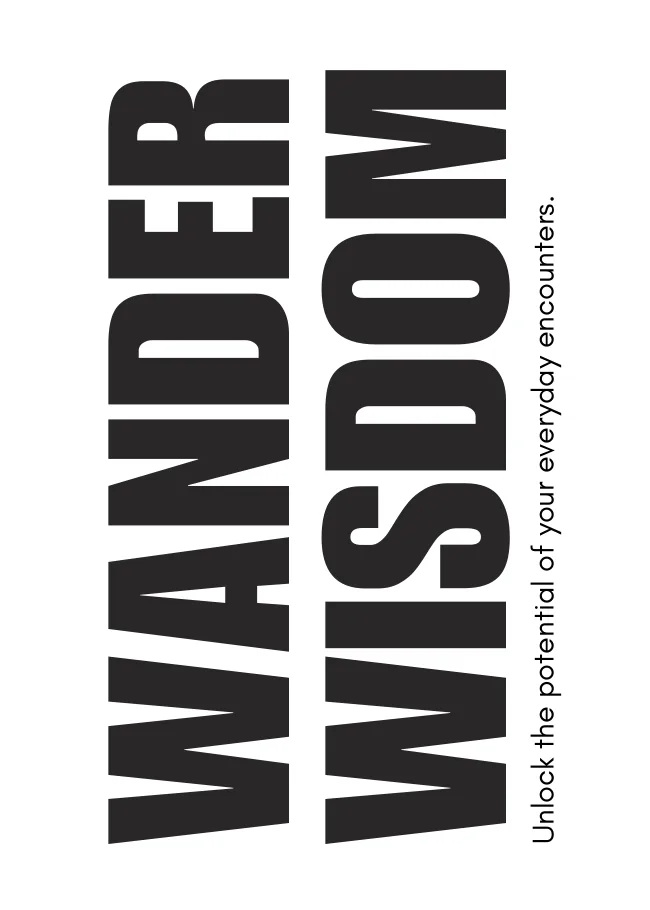
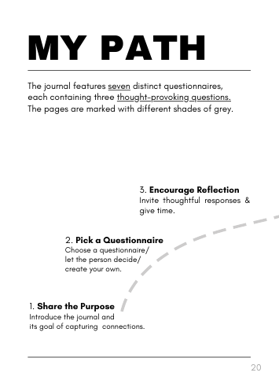

Along the way, it's the people we meet who make the greatest impact.
By Anna Mussotter
Wandering through life with curiosity & passion.
Three years ago, I carried a blank notebook and asked people to share their best advice.
What started as a simple idea quickly grew bigger. People connected with the concept, opened up, and I realised how valuable and unique it is to connect that way.
That sparked an idea: while studying for graduation, I began designing Wander Wisdom.
Testing the first sample in Australia uncovered the most beautiful insights from the people I met, and led to unexpected, meaningful moments that shaped my travels.
Today, that first notebook is the most valuable thing I own – and I hope this one becomes just as special for you.
There's a hidden gem in everyone – you just have to find it.
In a fast-paced world, we often miss the chance to truly connect. Conversations stay on the surface, and the only things we bring home are photos and videos.
Wander Wisdom hands the pen to the people you meet. They answer questions that go deeper, in their own handwriting, and you come home with their advice, their lessons and their way of seeing the world.
The map to track, pages 16 and 17. Mark every place in the colour that belongs to it.
What's inside
An A5 softcover journal with 88 pages. You fill in the first part. The people you meet fill in the rest.

CoverStepsYour profileA questionnaire

My pathCanvas of emotions
Your profile
Before anyone else writes in it, the book gets to know you: your hometown, the principles you live by, one fear, your goals, advice for your younger self and a message to your future self in five years.
Map to track
A world map to mark the places you've been and the people you met there.
Seven questionnaires
The heart of the book. Seven different questionnaires with three questions each, like Life is about…, Advice for people in their 20s or What makes a good friend? Every page has room for the writer's name, hometown and socials.
Quick connect
For when time is short but the connection still matters: three people, three short answers.
Your own pages
Everyone is unique. Write the questions only you would think of asking.
Hidden gems
The people you meet share their favourite places, activities, itineraries and artists. Your next trip, planned by locals and fellow travellers.
Canvas of emotions
How does happiness feel to you? What does it look like? People answer with a drawing. Art is understood across every language and border.
Doodle time
Space for sketches, stickers, tickets and fleeting ideas.
20 prompts
Questions at the back of the book for when you want to go deeper.
How it works
Share the purpose. Tell the person what the journal is for: capturing connections.
Pick a questionnaire. Choose one, let them choose, or make up your own.
Encourage reflection. Good answers need a quiet moment, so give them time.
Be respectful. Everyone decides how much they want to share.
Invite them further. Ask for a hidden gem or a drawing on the canvas of emotions.
Enjoy the journey. Page by page, you build a collection of stories nobody else has.
Better than “Where are you from?” Try one of the twenty prompts from the book:
What's the most valuable lesson you've learned from someone unexpected?
Where will your first wisdom come from?
Tap anywhere on the map to place your first dot.
Wander WisdomUnlock the potential of your everyday encounters.
The Wander Wisdom journal
€17
A5 softcover, 88 pages
Your profile, a world map, seven questionnaires, hidden gems, canvas of emotions, doodle pages and 20 prompts